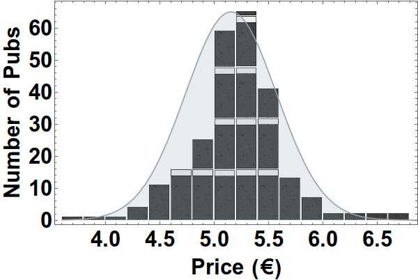

-
Overview
|
Map
|
Statistics
|
Analysis
|
About
|
Log a Price
Statistics
This tab gives a preliminary look at the collected data. We have calculated some figures of merit to quantify the distribution of collected data. These figures are displayed in the first table below:
| Average | €5.15 |
| Standard Deviation | €0.42 |
We are particularly interested to discover the pubs that have excelled and those that have brought shame on themselves with respect to their pricing of Guinness pints.
The two tables below show the five pubs at either end of the Guinness price spectrum thus far:
| Pub Name | Guinness Price |
|---|---|
| Snug Bar | €3.70 |
| Caulfield's Hotel Bar | €3.80 |
| The Portobello Bar | €4.00 |
| The Clock | €4.00 |
| The Pimlico Tavern | €4.20 |
| Pub Name | Guinness Price |
|---|---|
| The Old Storehouse | €6.70 |
| The Temple Bar | €6.60 |
| The Oliver St John Gogarty | €6.50 |
| The Auld Dubliner | €6.50 |
| Café en Seine | €6.30 |
The Snug Bar on upper stephen street is the cheapest pint thus far! It along with Caulfield's hotel bar on Dorset street are the bastions of sub four euro Guinness in county Dublin. Unsurprisingly four of the top five most expensive pubs collected thus far have come from Temple Bar. Temple Bar is the scourge of all our pockets and is best avoided.
We can also look at the overall Guinness price distribution of the data collected so far, it'd be neat if the data followed the Student's t-distribution (essentially indistinguishable from a normal distribution for this number of samples) because of the historical connection between Guniness and that distribution. We look at this distribution below:

The Guinness price distribution is shown as a stacked pint histogram of the prices collected so far, the corresponding Student's t-distribution (same average, same standard deviation, degrees of freedom = number of prices collected -1 and scaled to match maximum of histogram) is displayed also in blue. We can see that, unfortunately, the Guinness distribution is quite non-normal. The Guinness distribution is considerably more centrally peaked between €5.00-€5.30 than the corresponding t-distribution.